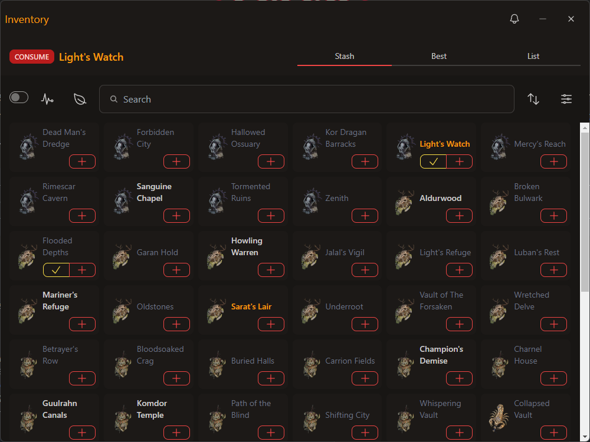
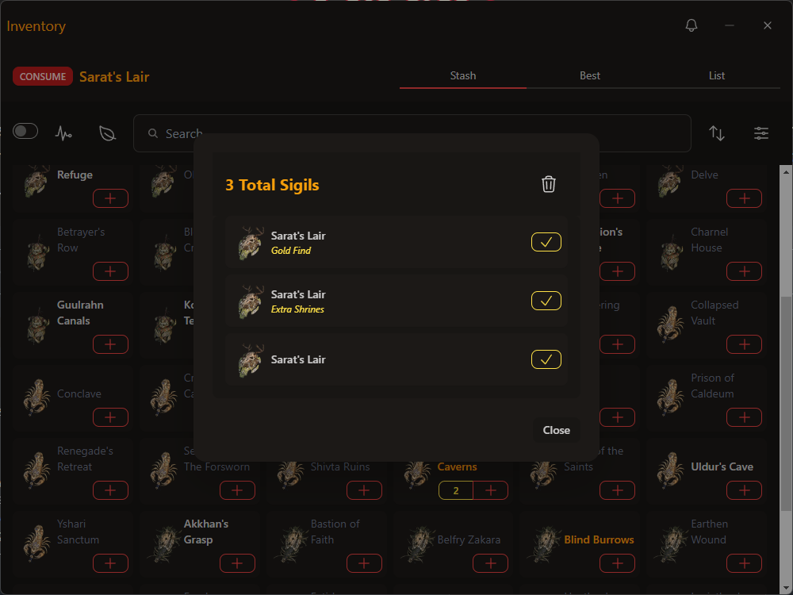
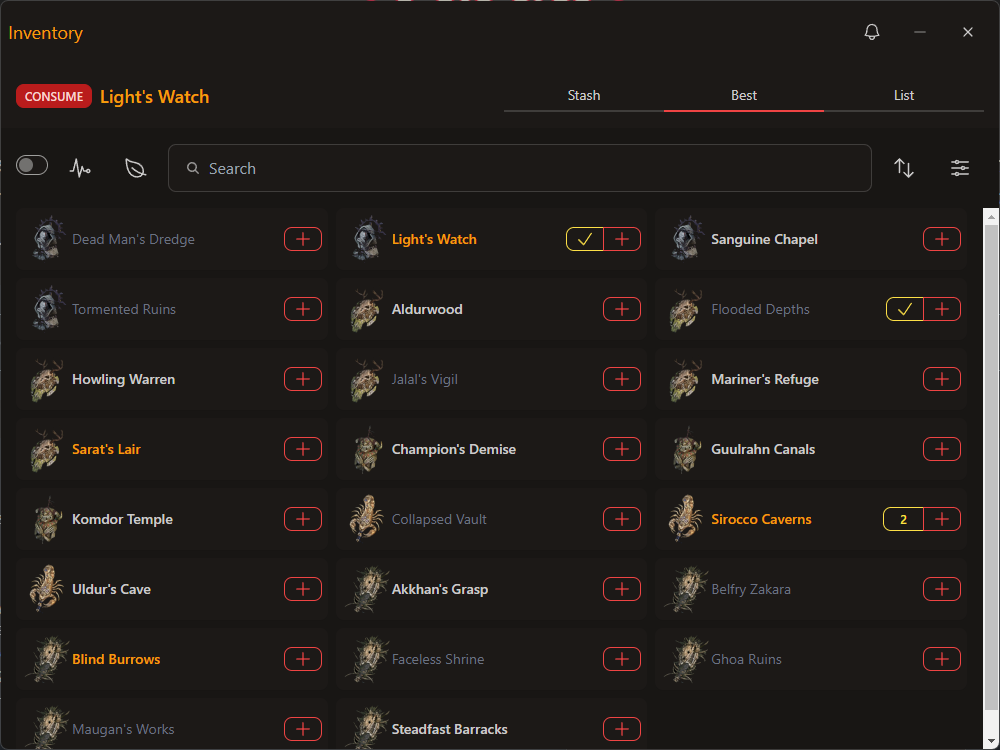
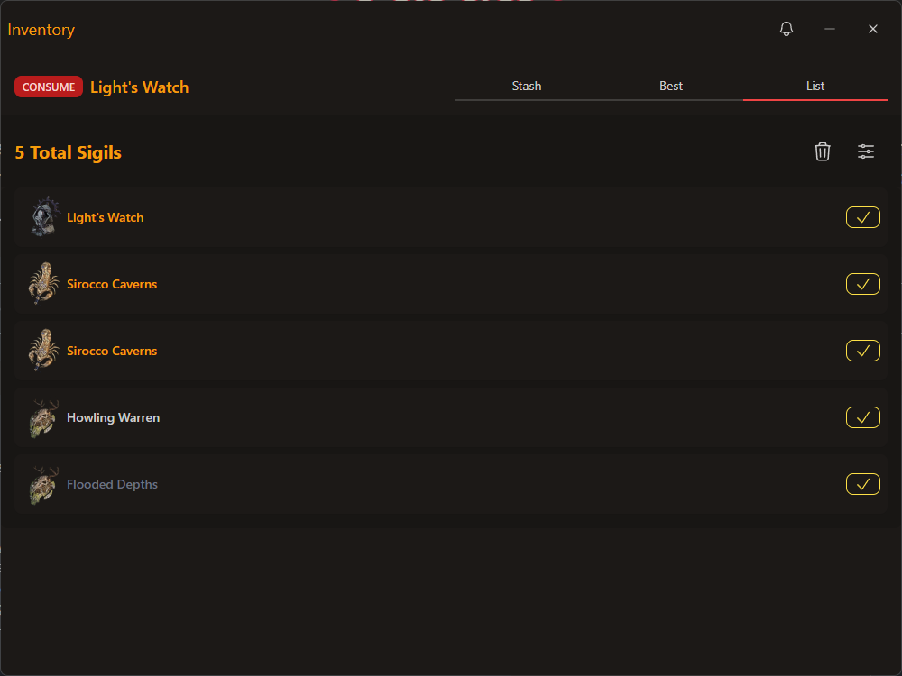
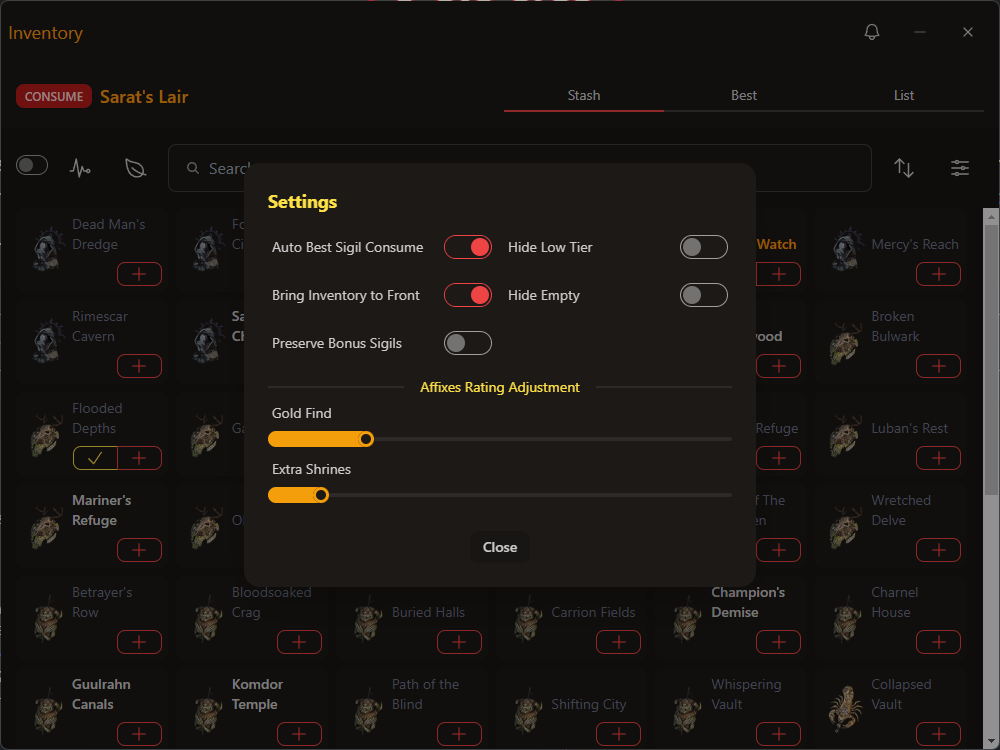

Sigils
The Inventory feature in dIVa provides a comprehensive inventory management system for your Sigils. This feature helps you organize,
track, and optimize your sigil collection across different views.
Functionality
- Best Sigils: Displays your Best Sigil available with a quick manual CONSUME action.
- Views: View all your Sigils in a compact grid views, or a detailed list view.
- Overlay: In-game Overlay to display your Best Sigil available.
- Analyze Filter: Analyze your Sigils based on the Tier Type selected.
- Season Filter: View sigils specific to the current season.
- Search: Quickly find specific sigils using the search bar.
- Sort Options: Organize sigils based on different criteria (e.g., Act, Alphabetical, Count).
- Settings: Configure settings for your Inventory.
- Tier Coloring: Sigils are color-coded based on their tier (e.g., S-Tier, A-Tier, everything else).
-
Consume: Use sigils directly from the inventory.
- For multiple sigils of the same type, a number will be displayed instead.
-
Add: Manually add sigils to your inventory.
- For sigils with an Affix, hold down the "+" button to access the Affix menu options.
Views
Stash View

The Stash view provides a grid-based overview of all your sigils, allowing for quick management and organization.
- Sigil Grid: Displays all your sigils in a compact, easy-to-view format.
- Sigil Icons: Visual representations of each sigil type.
- Quantity Indicator: Shows the number of sigils you have for each type.
- Quick Actions: Buttons to consume, list, or add sigils directly from the grid view.

Best View

The Best view focuses on optimizing your sigil inventory, showcasing the most effective sigils in your collection.
- Recommended Sigils: This view will only show S-Tier or A-Tier
List View

The List view provides a detailed, linear display of your sigils, allowing for easy management and consumption.
- Detailed Information: Shows the name, tier, and affix (if applicable) for each sigil.
- Quick Consumption: Easily consume individual sigils with a single click.
- Bulk Actions: Delete ALL Sigils.
- Color-coded Tiers: Sigils are color-coded based on their tier for easy identification.
Settings

The Settings feature allows you to customize your sigil inventory experience and optimize its functionality.
- Auto Best Sigil Consume: Automatically consume the best sigil when activated.
- Hide Low Tier: Option to hide lower-tier sigils for a cleaner inventory view.
- Bring Inventory to Front: Brings the inventory window to the front on auto-consume.
- Hide Empty: Hide empty sigil slots to focus on available sigils.
- Preserve Bonus Sigils: Protect sigils with bonus affixes from bulk deletion.
- Affixes Rating Adjustment: Fine-tune the rating of specific affixes to customize sigil evaluation.
Using the Sigil Views
- Open the Sigils window by clicking the "Key" icon in the sidebar, and selecting the "Stash" or "Best" tab.
- Use the search bar to find specific sigils or browse the available options.
- Click on the "Analyze" icon to select the Tier Type to analyze Sigils for.
- Use the "Season" dropdown to view sigils relevant to the current season.
-
To consume a sigil, click the checkmark button. For multiple sigils of the same type, a count will be displayed instead. Clicking this
will bring you to a List view for that Sigil type.
- To add a sigil to your inventory, click the "+" button.
- For sigils with affixes, hold down the "+" button to access the affix management options.